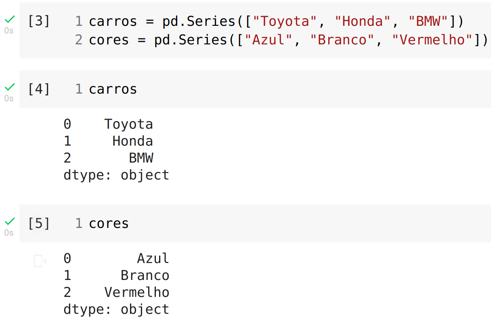
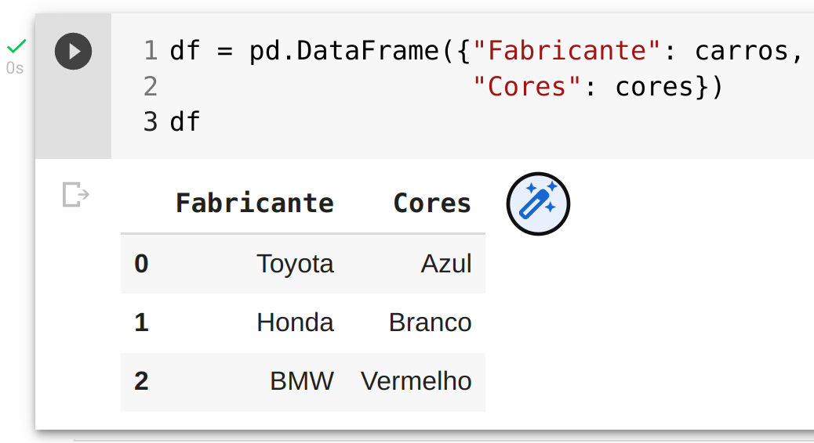

Tipos de dados
O Pandas possui dois tipos de dados principais, Series e DataFrame.
Séries são dados em uma única dimensão (coluna), já os DataFrames representam uma tabela de dados e possuem duas dimensões (linhas e colunas).
Series
Você pode criar uma Séries usando pd.Series() e passando uma lista Python:
carros = pd.Series(["Toyota", "Honda", "BMW"])
cores = pd.Series(["Azul", "Branco", "Vermelho"])
O notebook terá a seguinte saída:

DataFrame
Para criar um DataFrame utilizamos pd.DataFrame() passando um dicionário Python como parâmetro:
df = pd.DataFrame({"Fabricante": carros,
"Cores": cores})
No exemplo acima estamos criando um DataFrame a partir de duas Séries. A saída no notebook será:

Como podemos observar ao criar o DataFrame informamos um dicionário Python e geramos uma tabela de linhas e colunas onde as chaves do dicionário se tornaram os títulos das colunas e os valores das duas Séries se tornaram os dados no DataFrame.
WIP